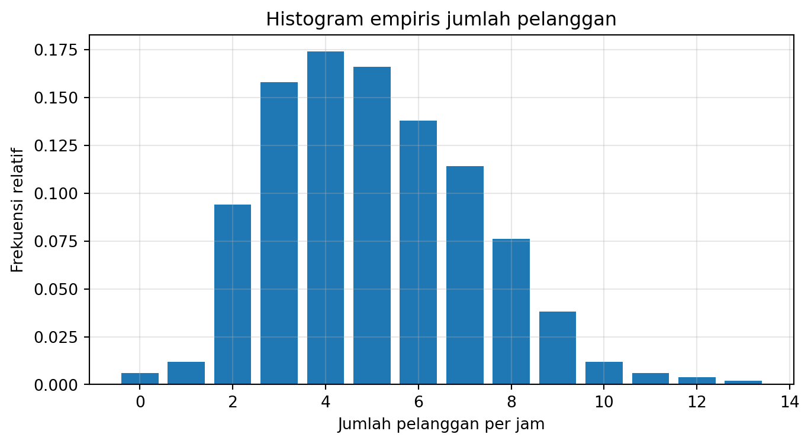
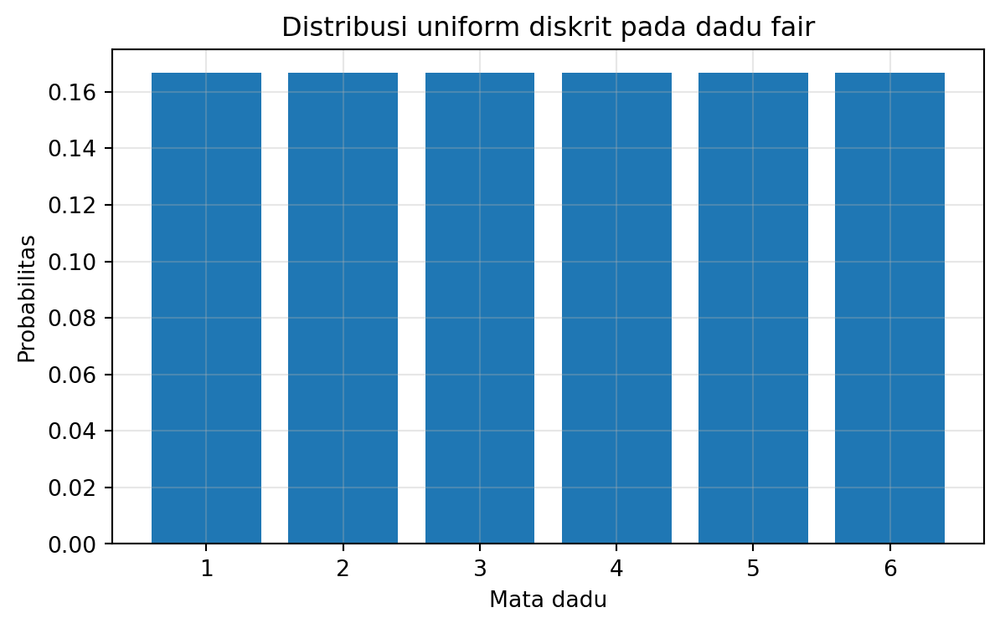

Setelah mempelajari bab ini, mahasiswa diharapkan mampu:
memahami apa yang dimaksud dengan distribusi random variable diskrit,
membangun distribusi diskrit dari data histogram atau dari model probabilistik,
mengenali dan menggunakan distribusi:
discrete uniform,
Bernoulli,
Binomial,
Geometric,
Poisson,
memahami makna parameter setiap distribusi,
menggunakan Python untuk:
simulasi,
perhitungan PMF/CDF,
visualisasi,
dan pengambilan keputusan,
memilih distribusi diskrit yang tepat untuk konteks masalah tertentu.
5.2 Pembuka
Di bab sebelumnya, kita sudah belajar bahwa random variable adalah cara memetakan dunia acak ke angka. Sekarang kita melangkah lebih jauh: setelah punya random variable, kita perlu tahu bagaimana peluang tersebar pada nilai-nilai yang mungkin.
Itulah yang disebut distribusi.
Untuk random variable diskrit, distribusi memberi jawaban atas pertanyaan seperti: - seberapa mungkin tepat 2 produk cacat? - seberapa mungkin tepat 10 pelanggan datang? - seberapa mungkin perlu 4 kali percobaan sampai sukses pertama? - seberapa mungkin jumlah panggilan masuk dalam satu jam sama dengan 7?
Bab ini akan memperkenalkan keluarga distribusi diskrit yang paling penting dan paling sering dipakai.
5.3 3.1 Quick Win: Dari Histogram ke Model
Bayangkan kita mengamati jumlah pelanggan yang datang ke sebuah kios kopi per jam selama beberapa hari, lalu mendapatkan data seperti berikut.
import numpy as npimport matplotlib.pyplot as pltfrom scipy import statsrng = np.random.default_rng(42)data = rng.poisson(lam=5, size=500)values, counts = np.unique(data, return_counts=True)probs = counts / counts.sum()plt.figure(figsize=(8,4))plt.bar(values, probs)plt.xlabel("Jumlah pelanggan per jam")plt.ylabel("Frekuensi relatif")plt.title("Histogram empiris jumlah pelanggan")plt.grid(alpha=0.3)plt.show()

Histogram ini belum tentu langsung memberi kita distribusi teoretis, tetapi ia memberi tiga hal penting: 1. range nilai yang mungkin, 2. lokasi pusat distribusi, 3. bentuk kasar penyebaran.
Dari sini kita bisa mulai bertanya: model mana yang paling masuk akal?
5.4 3.2 Distribusi Diskrit Kustom dari Histogram
5.4.1 K — Konteks
Kadang-kadang kita tidak mulai dari rumus distribusi yang terkenal. Kita mulai dari data empiris. Misalnya: - distribusi nilai kuis, - banyak pelanggan datang per jam, - banyak tiket gangguan per hari, - jumlah pembelian aplikasi per sesi.
5.4.2 M — Model
Jika kita sudah punya histogram atau frekuensi relatif, kita bisa memperlakukannya sebagai PMF empiris:
\[
p_X(x_i) \approx \frac{\text{frekuensi pada } x_i}{\text{total data}}
\]
Ini adalah distribusi diskrit kustom.
5.4.3 Q — Questions
Bagaimana membangun PMF dari data?
Bagaimana menghitung CDF empiris?
Bagaimana menghitung mean dan variance dari distribusi diskrit yang dibangun dari histogram?
Distribusi diskrit kustom sangat berguna ketika: - kita punya data nyata, - tetapi belum ingin atau belum bisa memaksakan model teoritis tertentu, - dan kita tetap ingin menghitung ekspektasi, varians, serta peluang kumulatif.
5.4.5 Ringkasan mini
Histogram dapat menjadi PMF empiris
Dari PMF empiris kita bisa hitung mean, variance, dan CDF
Ini adalah langkah awal yang penting sebelum memilih model yang lebih teoritis
5.5 3.3 Discrete Uniform Distribution
5.5.1 K — Konteks
Ada situasi di mana semua nilai mungkin dianggap sama-sama mungkin. Misalnya: - hasil lemparan dadu fair, - memilih satu nomor secara acak dari 1 sampai 10, - memilih satu hari dari 7 hari secara uniform.
5.5.2 M — Model
Jika \(X\) uniform diskrit pada \(\{a, a+1, \dots, b\}\), maka:
plt.figure(figsize=(7,4))plt.bar(x, pmf)plt.xlabel("Mata dadu")plt.ylabel("Probabilitas")plt.title("Distribusi uniform diskrit pada dadu fair")plt.grid(alpha=0.3)plt.show()

5.5.4.1 Hasil teoritis
Untuk uniform diskrit pada \(\{1,2,\dots,n\}\):
\[
E[X] = \frac{n+1}{2}
\]
\[
\mathrm{Var}(X) = \frac{n^2-1}{12}
\]
5.5.4.2 Interpretasi keputusan
Distribusi uniform diskrit dipakai ketika tidak ada alasan untuk memberi bobot lebih pada satu nilai dibanding yang lain.
5.5.5 Latihan singkat
Hitung mean dan variance untuk uniform diskrit pada \(\{3,4,\dots,10\}\).
Simulasikan 10000 sampel dari distribusi itu.
Beri contoh keputusan nyata yang cocok dimodelkan uniform diskrit.
5.6 3.4 Bernoulli Distribution
5.6.1 K — Konteks
Banyak keputusan nyata berujung pada dua kemungkinan: - sukses / gagal, - cacat / tidak cacat, - hujan / tidak hujan, - lolos / tidak lolos, - klik / tidak klik.
5.6.2 M — Model
Random variable Bernoulli memiliki dua nilai: \[
X \in \{0,1\}
\]
dengan: \[
P(X=1)=p, \qquad P(X=0)=1-p
\]
5.6.3 Q — Questions
Apa arti parameter \(p\)?
Berapa ekspektasi dan variansnya?
Masalah apa yang paling cocok dimodelkan Bernoulli?
Bernoulli adalah batu bata paling dasar bagi banyak distribusi lain. Binomial, misalnya, dibangun dari pengulangan Bernoulli.
5.6.5 Latihan singkat
Jika peluang klik iklan 0.03, tulis model Bernoullinya.
Hitung mean dan variance-nya.
Mengapa variance Bernoulli maksimum saat \(p=0.5\)?
5.7 3.5 Binomial Distribution
5.7.1 K — Konteks
Sekarang kita beralih dari satu percobaan Bernoulli ke \(n\) percobaan Bernoulli independen.
Contoh: - dari 100 produk, berapa yang cacat? - dari 20 email, berapa yang dibuka? - dari 10 lemparan koin, berapa Head?
5.7.2 M — Model
Jika: - ada \(n\) percobaan independen, - setiap percobaan punya peluang sukses \(p\), - \(X\) = jumlah sukses,
Gunakan Binomial ketika: - jumlah percobaan tetap, - tiap percobaan independen, - peluang sukses tetap, - yang kita hitung adalah jumlah sukses.
5.7.4.3 Contoh keputusan QC
Jika sebuah pabrik mengklaim tingkat cacat 1%, maka banyak cacat pada sampel 100 unit cocok dimodelkan Binomial(100, 0.01). Dari sana kita bisa menghitung apakah hasil inspeksi masih masuk akal.
5.7.5 Latihan singkat
Hitung peluang tepat 2 cacat dari 100 unit jika \(p=0.01\).
Hitung peluang paling banyak 2 cacat.
Simulasikan dan bandingkan hasil empiris dengan PMF teoritis.
5.8 3.6 Geometric Distribution
5.8.1 K — Konteks
Kadang bukan jumlah sukses yang ingin kita hitung, tetapi berapa lama menunggu sampai sukses pertama.
Contoh: - berapa kali mencoba login sampai berhasil? - berapa banyak panggilan sampai ada yang menjawab? - berapa kali inspeksi sampai menemukan cacat pertama?
5.8.2 M — Model
Jika setiap percobaan independen dan peluang sukses tiap percobaan adalah \(p\), maka random variable Geometric dapat didefinisikan sebagai:
\[
X = \text{jumlah percobaan sampai sukses pertama}
\]
dengan PMF:
\[
P(X=k)=(1-p)^{k-1}p, \qquad k=1,2,3,\dots
\]
5.8.3 Q — Questions
Berapa peluang sukses pertama terjadi pada percobaan ke-\(k\)?
Berapa rata-rata jumlah percobaan sampai sukses pertama?
Mengapa distribusi ini punya sifat memoryless?
5.8.4 A — Apply
p =0.25k = np.arange(1, 15)pmf = stats.geom.pmf(k, p)plt.figure(figsize=(8,4))plt.stem(k, pmf, basefmt=" ")plt.xlabel("k = percobaan sampai sukses pertama")plt.ylabel("P(X=k)")plt.title("PMF Geometric(p=0.25)")plt.grid(alpha=0.3)plt.show()
Artinya, jika kita sudah gagal sampai titik tertentu, peluang menunggu lebih lama lagi tidak “mengingat” masa lalu. Sifat ini akan muncul lagi pada distribusi Eksponensial di bab kontinu.
5.8.5 Latihan singkat
Jika peluang sukses 0.2, berapa rata-rata jumlah percobaan sampai sukses pertama?
Hitung peluang perlu lebih dari 5 percobaan.
Verifikasi sifat memoryless dengan simulasi.
5.9 3.7 Poisson Distribution
5.9.1 K — Konteks
Poisson sangat penting untuk memodelkan jumlah kejadian dalam suatu interval tetap, ketika kejadian itu: - relatif jarang, - independen, - dan rata-rata kejadian per interval diketahui.
Contoh: - jumlah panggilan masuk per jam, - jumlah pelanggan datang per 10 menit, - jumlah cacat pada lembar besar material, - jumlah kendaraan lewat per menit.
5.9.2 M — Model
Jika \(X\) = jumlah kejadian dalam interval, dengan rata-rata \(\lambda\), maka:
Poisson cocok untuk menghitung volume kedatangan, insiden, atau kejadian jarang dalam interval. Dalam keputusan operasional, ini sangat berguna untuk: - kapasitas layanan, - staffing, - quality control, - reliability.
5.9.5 Latihan singkat
Jika rata-rata pelanggan datang 5 per jam, hitung peluang tepat 7 pelanggan.
Hitung peluang paling banyak 3 pelanggan.
Bandingkan hasil Poisson dan Binomial pada kasus kejadian langka.
5.10 3.8 Memilih Distribusi yang Tepat
Salah satu kemampuan terpenting bukan hanya menghitung, tetapi memilih model yang masuk akal. Berikut panduan ringkas.
5.10.1 Bernoulli
Gunakan jika: - hanya ada dua hasil, - fokus pada satu percobaan.
Contoh: - klik / tidak klik, - cacat / tidak cacat.
5.10.2 Binomial
Gunakan jika: - ada \(n\) percobaan independen, - peluang sukses tetap, - fokus pada jumlah sukses.
Contoh: - jumlah cacat dari 100 unit.
5.10.3 Geometric
Gunakan jika: - fokus pada berapa lama menunggu sampai sukses pertama, - percobaan independen, - peluang sukses tetap.
Contoh: - jumlah percobaan sampai login berhasil.
5.10.4 Poisson
Gunakan jika: - fokus pada jumlah kejadian dalam interval, - rata-rata kejadian diketahui, - kejadian independen dan relatif jarang.
Contoh: - jumlah pasien datang per jam.
5.10.5 Uniform diskrit
Gunakan jika: - semua nilai dianggap sama mungkin.
Contoh: - hasil dadu fair.
5.11 3.9 Mini-Case KMQA 1 — Produk Cacat
5.11.1 K — Konteks
Pabrik mengklaim tingkat cacat 1%. Tim QC mengambil sampel 100 unit.
5.11.2 M — Model
Jika \(X\) = jumlah cacat, maka: \[
X \sim \text{Binomial}(100, 0.01)
\]
Pendekatan Poisson: \[
X \approx \text{Poisson}(1)
\]
5.11.3 Q — Questions
Berapa peluang tepat 2 cacat?
Berapa peluang paling banyak 2 cacat?
Jika ditemukan 6 cacat, apakah itu masih terasa wajar?
5.11.4 A — Apply
n =100p =0.01lam = n*pprint("P(X=2) Binomial =", stats.binom.pmf(2, n, p))print("P(X=2) Poisson =", stats.poisson.pmf(2, lam))print("P(X<=2) Binomial =", stats.binom.cdf(2, n, p))print("P(X<=2) Poisson =", stats.poisson.cdf(2, lam))print("P(X>=6) Binomial =", 1- stats.binom.cdf(5, n, p))
Distribusi Poisson membantu kios kopi menilai: - seberapa sering hari ramai, - seberapa besar stok minimum masuk akal, - dan berapa kapasitas pelayanan yang aman.
5.13 3.11 Mini-Case KMQA 3 — Login Sampai Berhasil
5.13.1 K — Konteks
Sebuah sistem login punya probabilitas sukses 0.8 untuk setiap percobaan independen.
5.13.2 M — Model
Jika \(X\) = jumlah percobaan sampai sukses pertama: \[
X \sim \text{Geometric}(p=0.8)
\]
5.13.3 Q — Questions
Berapa peluang sukses pada percobaan pertama?
Berapa peluang butuh lebih dari 3 percobaan?
Berapa rata-rata jumlah percobaan sampai berhasil?
Salah memilih model
Misalnya memakai Binomial padahal yang ditanya adalah waktu tunggu sampai sukses pertama.
Mencampuradukkan “jumlah sukses” dan “percobaan sampai sukses”
Ini perbedaan Binomial vs Geometric.
Menganggap Poisson untuk semua count data
Tidak. Poisson cocok jika mean dan variance kurang lebih sejalan. Bila variance jauh lebih besar, model lain mungkin lebih cocok.
Lupa memeriksa asumsi independensi dan peluang tetap
Binomial dan Geometric bergantung kuat pada asumsi ini.
Menghafal rumus tanpa memahami konteks
Tujuan bab ini justru agar Anda tahu kapan suatu distribusi relevan.
5.16 3.14 Menyimpulkan Bab Ini
Distribusi diskrit adalah alat yang sangat kuat untuk memodelkan banyak situasi nyata yang berupa hitungan. Kita telah melihat beberapa keluarga penting:
uniform diskrit untuk nilai-nilai yang sama mungkin,
Bernoulli untuk satu percobaan dua hasil,
Binomial untuk jumlah sukses dari banyak percobaan,
Geometric untuk menunggu sukses pertama,
Poisson untuk jumlah kejadian dalam suatu interval.
Yang terpenting bukan hanya bisa menghitung peluangnya, tetapi juga bisa mengatakan: - apa random variable-nya, - apa arti parameternya, - mengapa model itu masuk akal, - dan keputusan apa yang didukung oleh model itu.
5.17 3.15 Ringkasan Poin Inti
Distribusi diskrit menjelaskan bagaimana peluang tersebar pada nilai-nilai hitungan.
Histogram empiris bisa menjadi langkah awal membangun PMF kustom.
Uniform diskrit dipakai bila semua nilai sama mungkin.
Bernoulli memodelkan satu percobaan dua hasil.
Binomial memodelkan jumlah sukses dari \(n\) percobaan independen.
Geometric memodelkan jumlah percobaan sampai sukses pertama.
Poisson memodelkan jumlah kejadian dalam interval tetap.
Memilih distribusi yang tepat adalah kemampuan yang lebih penting daripada sekadar menghafal rumus.
5.18 3.16 Latihan Bab 3
5.18.1 A. Konseptual
Jelaskan perbedaan Bernoulli, Binomial, dan Geometric.
Mengapa Poisson sering dipakai untuk jumlah kejadian per interval?
Kapan uniform diskrit masuk akal, dan kapan tidak?
5.18.2 B. Hitungan
Sebuah email dibuka dengan peluang 0.2. Modelkan satu email sebagai Bernoulli dan hitung mean serta variance.
Dari 20 email independen, hitung peluang tepat 5 terbuka.
Jika peluang sukses 0.25, hitung peluang sukses pertama terjadi pada percobaan ke-4.
Jika rata-rata panggilan masuk 6 per jam, hitung peluang tepat 8 panggilan masuk.
5.18.3 C. Python
Simulasikan 50.000 Bernoulli dengan \(p=0.4\), lalu bandingkan mean dan variance simulasi dengan teori.
Simulasikan Binomial(20, 0.1) dan bandingkan histogram dengan PMF teoritis.
Simulasikan Geometric(0.3) dan verifikasi mean-nya.
Simulasikan Poisson(5) dan bandingkan histogram dengan PMF teoritis.
5.18.4 D. Aplikatif
Modelkan masalah quality control sederhana dengan Binomial.
Modelkan kedatangan pelanggan per jam dengan Poisson.
Modelkan percobaan login sampai berhasil dengan Geometric.
Jelaskan distribusi mana yang Anda pilih dan mengapa.
5.19 3.17 Penutup Kecil
Kalau di bab sebelumnya kita baru belajar “apa itu random variable”, maka di bab ini kita mulai benar-benar melihat keluarga model yang bisa dipakai untuk dunia nyata.
Di bab berikutnya, kita akan beralih ke distribusi random variable kontinu. Di sana, fokus kita tidak lagi pada hitungan kejadian, tetapi pada besaran seperti waktu, umur hidup, tinggi, jarak, dan banyak pengukuran lain yang lebih nyaman dipandang kontinu.